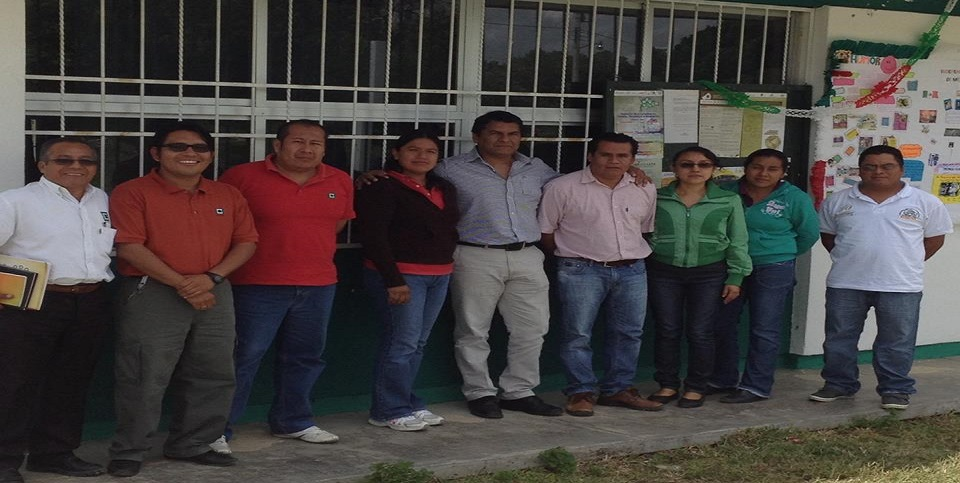

-

-

-

- 
Por medio de este curso se busca, en primera instancia, que los estudiantes adquieran conceptos básicos sobre la historia y desarrollo de los computadores para que se apropien de un lenguaje que les facilite su comunicación con el personal de sistemas de una organización.
Capacidad para usar técnicas experimentales, analíticas y heurísticas para la solución de problemas.
Conocimiento en hardware, software y aplicaciones; así como en técnicas básicas que representan el proceso computacional en todas sus áreas de aplicación.
Capacidad de desarrollar sistemas y encontrar soluciones creativas e innovadoras para las necesidades en sus lugares de trabajo.
Experiencia educacional integrada que le permita obtener la habilidad de aplicar conocimientos pertinentes en la identificación y solución sistemática de problemas prácticos en su áre de especialización.
Capacidad de proseguir estudios de posgrado.
Formar profesionales, investigadores, organizar, realizar y fomentar la investigación en su rama, y ya que por medio de esta adquieres muchos conocimientos que se requieren en el ámbito laboral de los negocios, así como los conocimientos necesarios para la materia de informática en negocios internacionales.
Hoy en día es muy importante que todo profesional tenga conocimientos de informática ya que con ello tiene que poner en práctica los negocios internacionales por medio de la computadora.